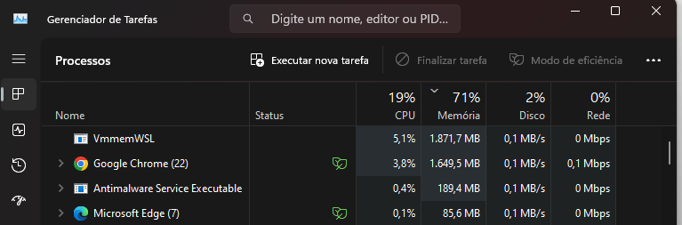

Concorrência
Essas anotações são provenientes da aula programação concorrente do canal Luciano Ramalho
Introdução
Normalmente confundimos paralelismo e concorrência como coisas muito parecidas (as vezes até iguais), mas esses conceitos possuem diferenças fundamentais que precisamos nos atentar.
Paralelismo pode ser definido, como quando você possui infraestrutura no computador para executar múltiplas tarefas ao mesmo tempo (ex - CPU com vários núcleos).
Enquanto concorrência por outro lado envolve em um gerenciamento do computador, onde ele decide qual processo deve começar e qual deve ser interrompido para conseguir executar no melhor tempo possível o que o usuário solicita.
Por exemplo, os computadores utilizam mais concorrência do que paralelismo.

Quando olhamos para o gerenciador de tarefas, entendemos que ele não está executando todos esses processos ao mesmo tempo (em paralelo), mas sim gerenciando a execução de cada um em concorrência.
Ele realiza um task switching entre as tarefas com velocidade, então parece que está tudo executando ao mesmo tempo.
A intel desenvolveu a questão do hyperthreading, onde a CPU consegue gerar dentro de cada núcleo mais de uma thread para execuções em paralelo. Então uma CPU de 4 cores, teria 8 se utilizasse hyperthreading.
Vector instructions → Alterações em grandes pedaços de memória. Um exemplo onde isso é usado é em edições de vídeos e imagens, onde você sinaliza para o computador que aquele pedaço de memória deve ser alterado conforme uma condição e isso é um tipo de paralelismo.
GPU → Unidade de processamento gráfico separada da CPU, ela também pode ser usada para fazer cálculos numéricos muito rápidos e é um tipo de paralelismo.
Como um computador consegue fazer várias coisas ao mesmo tempo?
Ele realiza isso através de mecanismos de implementação de concorrência. Sendo eles:
Interupt → Toda CPU, tem vários pinos soldados onde várias coisas podem ser conectadas (assim como um Arduino), e dentre esses pinos ela possui 2 que são chamados de Interrupt. Basicamente esses pinos quando recebem algum sinal elétrico, param o programa principal que estão executando, trocam de processo (através de uma tabela com ponteiros de memória das opções que possuem) e vão executar o novo processo. Assim que ele acabar eles voltam para o que estavam fazendo.
Um exemplo disso acontecendo seria o Mouse, porque o sistema operacional não precisa ficar escutando sempre se o mouse está se movendo ou não, a CPU recebe um interrupt e sinaliza que esse processo do mouse precisa ser executado.
Callback → Função que é executada depois que um processo acaba. Enquanto em python quando pedimos pra abrir um arquivo, ficamos esperando por ele, no node por exemplo conseguimos definir um callback e isso permite que o computador vá fazer outras coisas e só execute aquela outra instrução quando a inicial ficar pronta.
Kernel thread → a lista de tarefas que são executadas no kernel.
process → Processos executados pelo sistema operacional, ele é gerenciado e consegue organizar a concorrência delas. Mais pesado que userland threads e coroutines. Processos podem disparar várias threads, mas ele não tem acesso a memória de outros processos.
Userland thread (OS Threads - do sistema operacional) → Threads que o usuário consegue criar. Mais rápido de ser criado que process, mas mais pesado em alocação de memória que coroutines. Threads podem acessar memória de outras threads.
coroutine → Thread mais leve (fica dentro de uma thread), não tem uma alocação de memória grande. Ideal pra fazer I/O, porque elas não precisam ficar todas ativas. Pra não alocar uma coroutine dentro de uma thread inteira, existem algumas palavras como await por exemplo que permite que ela não ocupe tudo.
actor → Ocorre em algumas linguagens. É como se cada ator fosse um software, que tivesse uma thread própria onde pode ser executado. Não tem compartilhamento de memória.
Intercâmbio de dados
Compartilhamento de memória → Pra rodar várias coisas juntas em concorrência, o compartilhamento de memória é uma forma de fazer isso funcionar. O problema disso é a mutabilidade dos dados pode gerar race condition, onde a que executar primeiro a operação pode gerar alteração no dado que vai afetar a próxima thread que não está esperando isso (ou está executando ao mesmo tempo).
Message passing → Os processos se comunicam através de mensagem (enviando cópia dos dados), e sem memória compartilhada. Isso dá certo em Erlang porque os dados são todos imutáveis.
Queue/channel → Você enfilera processos e eles vão sendo retirados conforme a necessidade.
Sincronização
A meta é evitar que as coisas executem na ordem certa, sem uma coisa sobrepor a outra.
Filas e canais são muito usados nisso.
Lock e semaphore são outras ferramentas utilizadas.
Devemos evitar travar demais o sistema pra sempre estar sincronizado porque perdemos performance, e nem deixar super aberto pra evitar travas.
Runtimes → Ambiente de execução de uma linguagem de programação
Monocore → Só consegue usar um núcleo da CPU (Python, Node, etc)
No caso de Python, ele só consegue se for integrado com outra lib que permita isso.
Multicore → Consegue usar múltiplos núcleos da CPU (Java, Go, Elixir)
Linguagens funcionais → São consideradas as melhores linguagens pra trabalhar com concorrência
Elas são melhor preparadas pra ter dados imutáveis, e evitar os problemas que temos por concorrência de dados etc.